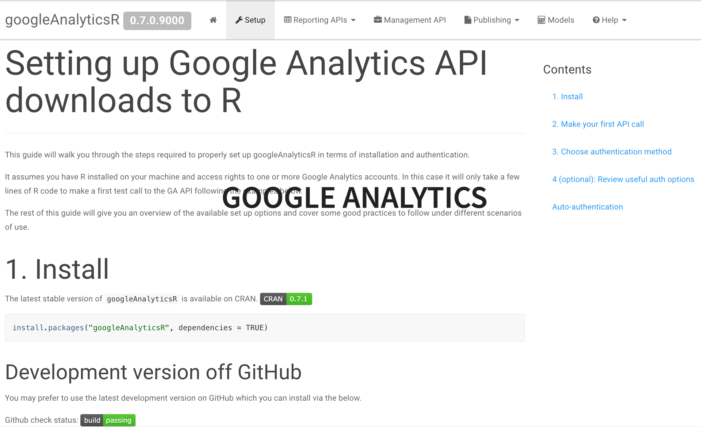
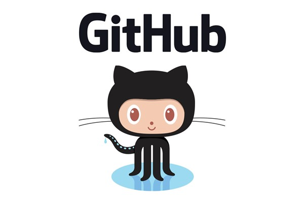

Measurecamp CPH19
Creating datapipelines with R
By Danny Mawani Holmgaard
Agenda
- About my journey
- Stuff I am still figuring out
- Learn to grab different types of data
- Connect Github and Cloud Storage
- Use R in the GCP
- Extract Transform and Load data into BigQuery
My journey
- Worked with Digital Analytics for 6 years
- Lead Analyst @ IMPACT EXTEND
- Responsible for all data pipelines
- Moving from digital analytics to data engineering
- Primarily use R and GCP
Our team
Stuff I am currently trying to get better at using
- Using Python and SQL instead of using R for everything
- Utilizing Docker
- Set up plumber API’s to make my life easier
- Deploying shinyapps to GCP with authentication

What i am trying to say is that there is a lot to grasp and that it takes time to optimize your workflow
But now, lets get to the place where we can get to do some cool stuff!
Grabbing different types of data
SQL Servers
#load libraries
#library(tidyverse)
#library(dbi)
#library(odbc)
#set up connection object
con <- DBI::dbConnect(odbc::odbc(),
Driver = "SQL Server",
Server = "yourserver.database.windows.net",
Database = "databasename",
UID = "userid",
PWD = "password",
Port = 1234)
#extract data
dataset <- as_tibble(
tbl(con, "dataset")%>%
head(100) #Get the first 100 rows
)
FTP Servers
#library(RCurl)
syntax <- "ftp://"
ftpHost <- "ftp.yourserver.com.com"
ftpUser <- "username"
ftpPass <- "password"
folder <- "/folder/" #delete folder if in root
ftpURL <- paste(syntax,ftpHost,folder,sep = "")
#Download files function
download <- function(file){
fileDownload <- file
downloadFtpUrl <- paste(ftpURL,fileDownload, sep = "")
downloadFtpUrlCredentials <- paste(ftpUser,":",ftpPass, sep = "")
bin <- getBinaryURL(downloadFtpUrl,userpwd=downloadFtpUrlCredentials)
con <- file(fileDownload, open = "wb")
writeBin(bin, con)
close(con)}
#Download files
download("yourfile.csv")
postgress database
#library('RPostgreSQL')
#create connection object
con <- dbConnect(drv ="RPostgreSQL",
user="",
password="",
host="",
port=1234,
dbname="")
#extract data
dataset <- as_tibble(
tbl(con, "dataset")%>%
head(100) #Get the first 100 rows
)
Google Analytics

Facebook and Instagram
-
It is difficult to download Facebook and instagram data
-
Seek a third party vendor instead
- Remember, maintaining API work can require a lof of work and could potentially break whereas a vendor are living of maintaining these tools and have the right types of access
Connect Github and Cloud storage to your work
Github
-
Github is the closest thing you get to a “dropbox” for your code.
-
It allows version control and makes sure that your code is always updated
-
From github, you can push you code into other systems and work on the same projects

Cloud Storage
-
Cloud storage lets you upload and pull files in a secure environment
-
It has great API’s and can sync directly with bigQuery
-
Thanks to Mark Edmonson, we can also source R code directly from there
- Set up Github and put you code there
- Create a bucket in Cloud Storage
- Create a trigger with cloudbuild where you link to the repo
- Add cloudbuild.yalm to the folder
steps:
- name: gcr.io/cloud-builders/gsutil
args: ["-m", "rsync", "-r", "-c", "-d", ".", "gs://yourfolderincloudstorage/ifneededthencreateasubfolder"]
Sourcing from Cloud Storage
#install.package("googleCloudStorageR") if you have not installed it yet
#load the library
library(googleCloudStorageR)
#Authenticate
gcs_auth()
googleCloudStorageR::gcs_source('yoursubfolderifyouhaveone/yourscript.R', bucket = 'yourcreatedbucket')
Use R studio in the Google Cloud Platform
1. Set up billing
2. Thank Mark that he build a script that does everything for you
# You need to authenticate with your GCP account before being able to do it
gce_vm("yourmachinename", project ="gar-creds-185213", zone = "europe-west1-b",
predefined_type = "g1-small",
template = "rstudio",
username = "username",
password = "password")
The easy way to run scripts automatically from GCS

#set machine to be launched
library(googleComputeEngineR)
library(googleCloudStorageR)
library(googleAuthR)
gar_auth("/home/username/.httr-oauth")
GCE_AUTH_FILE="/home/username/auth.json"
GCE_DEFAULT_PROJECT_ID="projectname"
GCE_DEFAULT_ZONE="europe-west1-b"
gcs_global_bucket("bucketname")
BQ_AUTH_FILE="/home/username/bq.oauth"
vm <- gce_vm("yourvirtualmachine")
vm <- gce_ssh_setup(vm,
username = "username",
key.pub = "/home/username/.ssh/id_rsa.pub",
key.private = "/home/username/.ssh/id_rsa")
runme <- "Rscript -e \"googleAuthR::gar_gce_auth();googleCloudStorageR::gcs_source('cloudstoragefolder/script.r', bucket = 'bucket')\""
docker_cmd(vm,
cmd = "exec",
args = c("rstudio", runme),
wait = TRUE,
capture_text = FALSE)
Automating the script to run at a specific time
Remember - your if you turn of the machine, the cronjob settings will stop working
Sending data to bigQuery
#library(bigQueryR)
# First Create the dataset
# bqr_create_table(projectId = "your project id",
# datasetId = "dataset", "your table", your dataframe,
# timePartitioning = FALSE, expirationMs = 0L)
bqr_upload_data(projectId = "your project id",
datasetId = "dataset", "your table", yourdataframe,
overwrite = FALSE, #True to overwrite your table
wait = TRUE, autodetect = FALSE,
maxBadRecords = 1000)
Final thoughts
-
This is not the most stable way to do things, but the easiest
-
There is so many ways you can work with making your data flow
-
Start small and build your way up from there
Questions?
-
@dannymawani (Twitter / Linkedin)